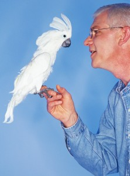

Tafla
| # | Make | Model | Year |
|---|---|---|---|
| 1 | Honda | Accord | 2009 |
| 2 | Toyota | Camry | 2012 |
| 3 | Hyundai | Elantra | 2010 |
| 4 | Ford | Focus | 2008 |
| 5 | Nissan | Sentra | 2011 |
| 6 | BMW | M3 | 2009 |
| 7 | Honda | Civic | 2010 |
| 8 | Kia | Soul | 2010 |

Vaccinations
Dogs, cats, rats and snakes are susceptible to a variety of illnesses that can be completely prevented by following the appropriate vaccination schedule.
Checkups
Regular checkups are a key factor in pet wellness, and can often unearth problems that could lead to health issues down the road.
Senior Pets
Senior pets generally require more medical attention than their younger counterparts, just as senior humans do. So when is a pet considered “senior”?
Diet Plans
Wisdom veterinarians have all had extensive training in pet nutrition and are your best resources when considering changing your pet’s diet.